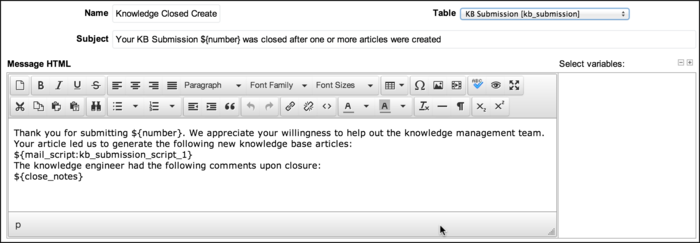
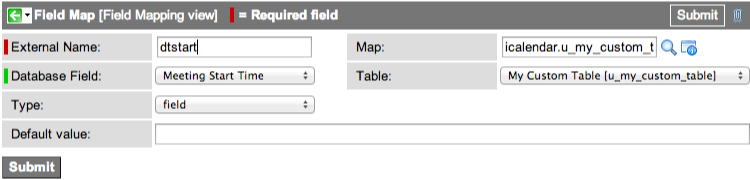

Email Templates
| |
Note: This article applies to Fuji and earlier releases. For more current information, see Email Templates at http://docs.servicenow.com
The ServiceNow Wiki is no longer being updated. Visit http://docs.servicenow.com for the latest product documentation. |
1 Overview
Email templates enable administrators to create reusable content for the subject line and message body of email notifications. Templates deliver consistent information on specific system activities and improve the efficiency of creating multiple email notifications for similar actions. If necessary, you can make minor changes on the fly to an email that uses a template by overriding the subject line and message body content in the notification form. A common practice is to define the message body in a template and create new subject lines for different types of recipients. There is no limit to the number of templates that you can create.
Email templates are created in rich HTML format, and administrators have the option of converting existing email templates to rich HTML (starting with the Eureka release). This format provides several advantages, including:
- Raw HTML content is converted into a WYSIWYG format.
- The content can be edited in a feature-rich HTML editor.
- Mail scripts are condensed into a single, easy-to-read line that can be reused in multiple email notifications.
- To prevent broken links, images linked using URLs relative to a particular instance are converted to absolute links.
2 Creating a Template
This section provides instructions for creating a template with rich HTML formatting, which is available starting with the Eureka release. If you are using an earlier version, see the previous version information.
- Navigate to System Policy > Email > Templates.
- Click New.
- Fill in the fields, as appropriate (see table).
{kind=link}
| Field | Description |
|---|---|
| Name | Enter a unique name for the template. For example, change.update.risk. |
| Table | Select the name of the table involved. For example, Change Request [change_request]. |
| Subject | Enter a subject line that explains the purpose of the email. Select the appropriate variables for the subject line from the fields available on the selected table. Place the cursor where you want the variable to appear, and click the field name in the Select variables column. For example: ${sys_class_name} ${number} with ${risk} risk has been assigned to you.
|
| Message HTML | Enter the content of the email template message. You can use the HTML editor toolbar to format the HTML, and you can include variables from the Select variables column. Variables map to column names available from the notification table, its parent tables, and reference tables. Use variables to include values from a record in the table such as an incident's short description or comments and work notes.
Notes:
|
| Message Text | Enter the notification message to send in plain text.
Note: When a template is applied to a notification, the contents of this field are used if you selected HTML and plain text or Text in the Content Type field in the Email Notification form. |
| SMS alternate | Create a different message to be delivered to the recipient's SMS device. You might want a brief message, showing the most important information only. If this message field is blank, the contents of the Message Text field are used for the SMS message.
Note: The message in this field is used when the message is sent to a device configured as SMS. |
2.1 Applying a Template to an Email Notification
If you are using an earlier version, see the previous version information.
- Navigate to System Policy > Email > Notifications.
- Open the email notification record that should use the template.
- Navigate to the What it will contain section.
- From the Email template field, select the appropriate template.
- Click Update.
2.2 Overriding a Template Value
You can customize an email notification to override a specific value without changing the basic information contained in the template, starting with the Dublin release. If you are using a version prior to Dublin, see the previous version information.
- Navigate to System Policy > Email > Templates.
- Open an email template.
- Enter a new value for the field you want to override.
- For example, you might change the subject line to read The risk level of ${sys_class_name} ${number} has been raised to ${risk}. This would not change the basic information about the change request contained in the template, but would make the email notification appropriate for the change manager who needs to know when risk levels are escalated above a certain threshold.
- Click Update.
2.3 Creating Templates in Versions Prior to Eureka
| Click the plus for instructions on creating, applying, and overriding templates with versions prior to the Eureka release | ||
|---|---|---|
To create a new template:
|
3 Working with Existing Email Templates
New email templates are created in the rich HTML format (starting with the Eureka release). You can convert template content that was created in a pre-Eureka version to rich HTML so it can be edited in the WYSIWYG editor.
To convert an email template to rich HTML:
- Navigate to System Policy > Email > Templates.
- Open the email template you want to convert.
- Click Switch to Rich HTML Editor.
- When content is converted, these changes are made to the content:
- HTML Editor: Any raw HTML in the Message field is rendered as WYSIWYG text in the Message HTML field. The content can be edited in a feature-rich HTML editor.
- Simplified Mail Scripts: Any mail scripts in the body are automatically saved to the Email Script [sys_script_email] table and are replaced in the notification body with an embedded script tag. This makes the template body easier to read and makes it easier to reuse scripts in multiple email templates.
- 
- When content is converted, these changes are made to the content:
- Modify the message text, as needed, using the WYSIWYG editor or by editing the underlying HTML.
{kind=link}
{kind=link}
| |
Note: The letter "P" at the bottom of the screen shows the location of your cursor within the Message field. In this case, the cursor is in a line containing an HTML <p> tag. |
| |
Note: Email templates that are already formatted with rich HTML do not show the Switch to Rich HTML Editor button. |
3.1 Best Practice for Creating Templates
Whether you are working with templates converted from earlier versions of ServiceNow or creating new templates in the rich HTML format, it is a best practice to write mail scripts in System Policy > Email > Notification Email Scripts. When the scripts are completed, a ${mail_script:script name} embedded script tag should be added to the email template body. This makes it easy to use the same scripts in multiple email templates. All that needs to be copied and pasted from one template to the next is the embedded script tag.
If you manually enter a mail script in the body of a new or converted email notification or template, and then attempt to save the record, a message asks whether the mail script should be converted. Unconverted mail scripts often fail to run from inside the HTML editor. If you select Yes, the script is added to the Email Script [sys_script_email] table and is automatically replaced in the body with an embedded script tag.
You can view the mail scripts in their original form by opening the email template and clicking the Show Notification Scripts related link.
4 Calendar Integration
With email notifications, you can use import export maps to leverage information about records and integrate with Outlook or another calendar. For example, an email notification can create a calendar event based on the planned start and end dates of a change request. To integrate with a calendar, add one or more of the following iCalendar variables to an email template message and reference the email template from the notification. The variables must be added to the Message Text field starting with the Eureka release.
| Variable Name | Description |
|---|---|
| ${dtstart} | Start Date |
| ${dtend} | End Date |
| ${alarm_time} | Alert or reminder time |
| ${description} | Description |
| ${location} | Location |
| |
Note: In order for the calendar integration to work, iCalendar variables must be added to an email template. The integration does not work if the variables are added directly to the email notification. |
By default, the ServiceNow system computes the value of iCalendar variables using import export maps for the following tables:
- Appointment [itil_appointment]
- Change Request [change_request]
- Incident [incident]
- Reminder [reminder]
{kind=link}
Each import export map can specify a different set of iCalendar fields. For example, the icalendar.change_request import export map only maps two iCalendar fields.
{kind=link}
ServiceNow uses the External Name as the variable name in the email template. For example, the icalendar.change_request import export map defines the dtstart and dtend variables.
| External Name | Associated Variable Name | Table | Field Mapped | Field Label |
|---|---|---|---|---|
| dtstart | ${dtstart} | change_request | start_date | Planned start date |
| dtend | ${dtend} | change_request | end_date | Planned end date |
4.1 Mapping Date Fields to iCalendar Variables
You can specify what fields provide the date information in calendar invitation notifications by changing the field mappings of the dtstart and dtend variables in the import export map for the iCalendar invitation.
- In the navigation filter, enter sys_impex_map.list.
- Open the icalendar.change_request map or the map you want to edit.
- In the Field Maps related list, click either the end_date or start_date mapped field to change the mapping for dtstart or dtend, as needed.
- Change the Database Field to the ServiceNow field you want to use to set the start date or end date.
- Click Update.
4.2 Creating iCalendar Invitations for Custom Tables
If you want to generate iCalendar invitations that use field values from custom tables, you must create an import export map that computes the values of the iCalendar fields.
- Create the custom table and fields.
- Use the Date/Time (glide_date_time) field type for fields that will map to the ${dtstart} and ${dtend} variables.
- Create an import export map that maps the fields from the custom table to iCalendar fields.
- Create an email template that defines what to include in the iCalendar invitation.
- Create an email notification that references the template.
4.2.1 Create the Import Export Map
- In the navigation filter, enter sys_impex_map.list.
- Click New.
- Set the following fields:
- Name: Use the following naming convention: icalendar.<table name>. For example, icalendar.u_my_custom_table.
- Table: Select the custom table you created.
- Type: Select icalendar.
- Right-click the form header and click Save.
- In the Field Maps related list, click New.
- In the Mapping Entry Wizard, select Mapping to a Database Field.
- Create field mappings for dtstart and dtend. These variables are required.
- For example, map the External Name dtstart to the u_meeting_start_time field in u_my_custom_table.
- Sample field mapping dtstart
- Click Submit.
- Create field mappings for any other iCalendar fields as necessary.
- Click Update.
{kind=link}
Here are sample field mappings between iCalendar variables and custom fields in a custom table, u_my_custom_table:
| External Name | Database Field | Type | Map |
|---|---|---|---|
| dtstart | u_meeting_start_time | field | icalendar.u_my_custom_table |
| dtend | u_meeting_end_time | field | icalendar.u_my_custom_table |
| description | u_meeting_description | field | icalendar.u_my_custom_table |
4.2.2 Create the Email Template
After you create the import export map, create an email template that defines what to include in the iCalendar invitation. On the Email Template form, set the Table field to the custom table you created. In the Message text (starting with the Eureka release) or Message field, use the following format to define the iCalendar invitation.
| |
Note: Mail script is not allowed or processed in meeting invitation email templates. |
BEGIN:VCALENDAR
PRODID:-//Service-now.com//Outlook 11.0 MIMEDIR//EN
VERSION:2.0
METHOD:REQUEST
BEGIN:VEVENT
ATTENDEE;ROLE=REQ-PARTICIPANT;RSVP=TRUE:MAILTO:${to}
DTSTART:${dtstart}
DTEND:${dtend}
UID:${sys_id}
DTSTAMP:${dtstamp}
DESCRIPTION:${description}
SUMMARY:${u_meeting_summary}
END:VEVENT
END:VCALENDAR
| Click the plus to view details about each line of the iCalendar invitation template. | |||||||||||||||||||||||||||||||||||||||||||||
|---|---|---|---|---|---|---|---|---|---|---|---|---|---|---|---|---|---|---|---|---|---|---|---|---|---|---|---|---|---|---|---|---|---|---|---|---|---|---|---|---|---|---|---|---|---|
|
4.2.3 Create the Email Notification
After you create the email template, create an email notification to trigger the iCalendar invitation. On the Email Notification form, under Related Links, click Advanced view. Ensure the following fields are set accordingly:
- Table: Select the custom table.
- Type: Select Meeting Invitation.
- Content type: Select Plain text only.
- Email template: Select the template you created.
5 Troubleshooting
For more information about troubleshooting email templates, see the following posts in the ServiceNow community:
Contents > Administer > Service Administration > Notification Administration
Contents > Integrate > Email Integrations
Contents > Script > Server Scripting